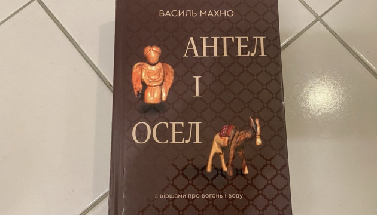

Вийшов перший художній твір про Нобелівського лауреата з України Агнона
Вийшов друком роман, де вперше в художній формі осмислюється постать єврейського письменника з Бучача на Тернопільщині, лауреата Нобелівської премії з літератури Шмуеля Йосефа Агнона.
Автор: Мудрий Антон